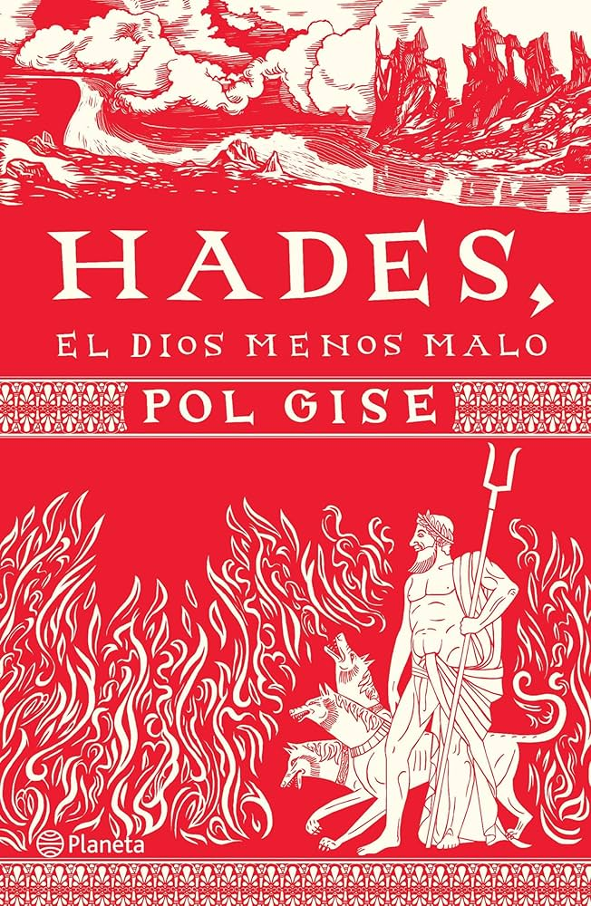

Libros 💖
He leído pocos libros, ya que no soy de las personas que leen uno cada semana. Prefiero, de acuerdo con el libro que estoy leyendo, investigar más a fondo: sobre su autor, la inspiración detrás de su creación, entre otros aspectos.
Así que les contaré un poco de mis libros favoritos
Libro #1
Almendra
De Won-Pyung Sohn
Este fue el primer libro que leí por recomendación de un cantante. No le tenía muchas expectativas, pero, por el hecho de que uno de mis cantantes favoritos lo había leído, decidí darle una oportunidad. El libro narra la historia de Yunjae, un niño que no puede expresar sus sentimientos debido a una condición que padece. A lo largo de los capítulos, se enfrenta a grandes situaciones en las que tiene que aprender a encontrarse a sí mismo en un mundo donde nadie lo comprende.
Libro #2
Hades, el dios menos malo
De Pol Gise
Es el último libro que leí. Anteriormente ya había leído otro del mismo autor, y la verdad me gusta mucho cómo adapta un mito en forma de cuento, haciéndolo más fácil y divertido de entender.
El libro nos habla del dios del Inframundo, Hades. Relata cómo fue devorado por su propio padre, cómo llegó a convertirse en el gobernante del inframundo y también cómo conoció a su esposa, Kore, entre otros sucesos.
Libro #3
Sísifo, el hombre que engañó a la muerte
De Pol Gise
Este libro también lo leí por recomendación de un amigo, y fue ahí donde conocí al autor Pol Gise. Como ya mencioné, me gusta mucho la forma en que adapta los mitos.
Al igual que en el de Hades, este libro narra la historia de Sísifo y cómo terminó recibiendo el castigo al que fue condenado.